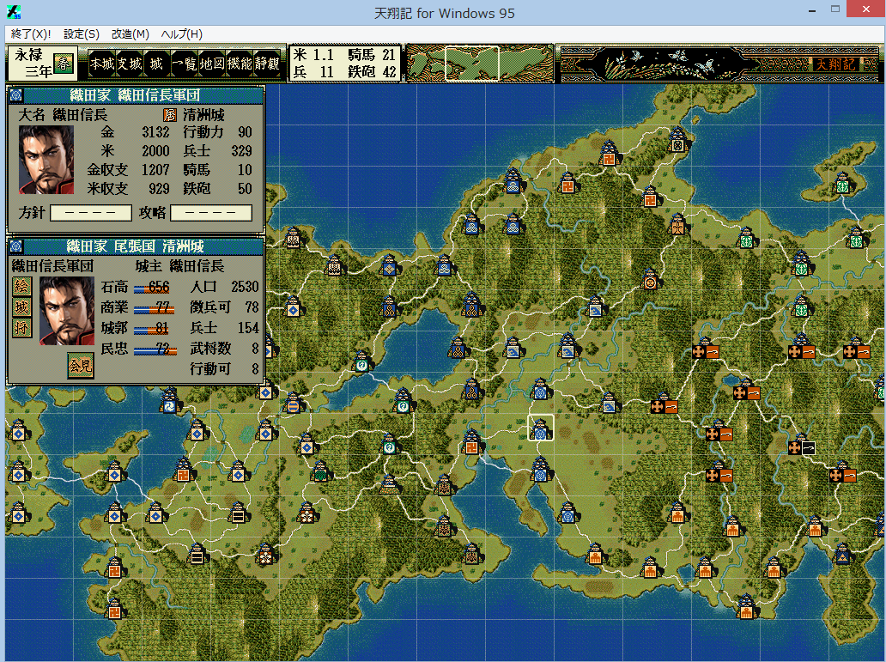

要するに、下記画像のようになる。

これは｢戦場グリッドマップ｣と称される、高品質の入替マップです。
｢メインマップ画像の入れ替えツール｣の取り込み機能を利用して、「覚え書きの人｣により制作されました。
詳細な解説、画素材、及び、動作に必要となるプログラムは、
下記、｢戦場グリッドマップ by 覚書｣のリンクのファイルに含まれます。
下にあるリンク「MapDataObgkMod.zip」の方が、上記リンクに同封されている｢MapDataObgkMod.dll｣より、
新しいバージョンかもしれません。
そうであるなら、上書きして下さい。
又、ソースファイルも含まれている。
このソースは、 ｢一般MOD｣の作り方のヒントとして役立つでしょう。
TSModもしくはPluginModが導入されていること。